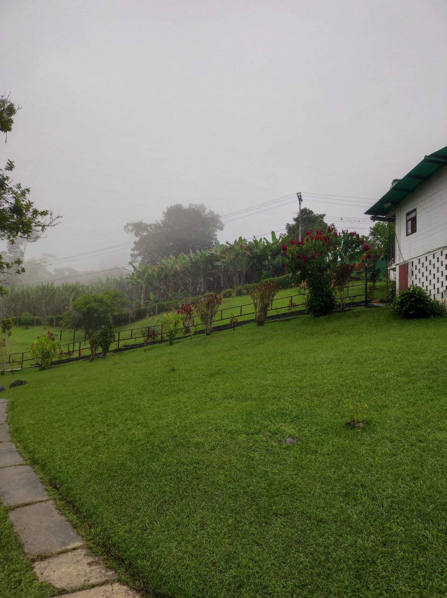
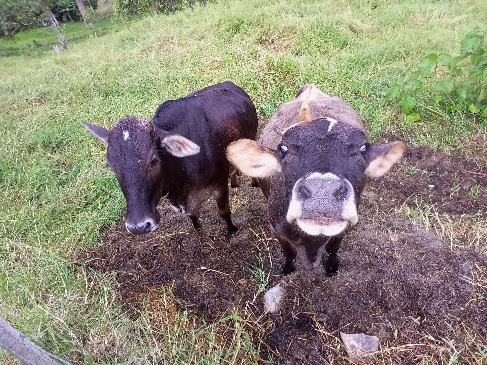
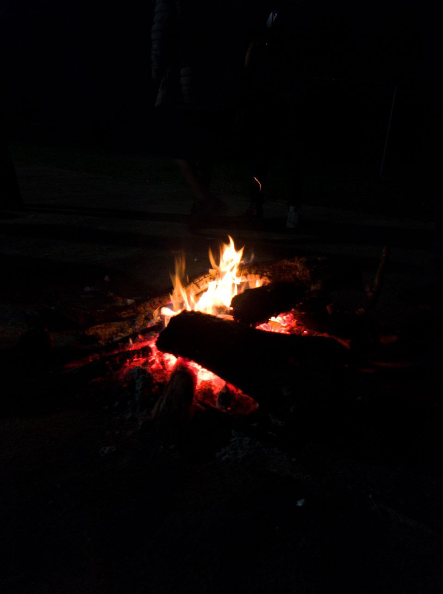

Naturaleza

Desde el bullicio de la ciudad hasta la tranquilidad del campo,
decidimos emprender un viaje a una pintoresca granja para escapar del
ajetreo diario y sumergirnos en la vida rural.
Con las maletas llenas de expectativas y la emoción palpable en el aire,
partimos hacia un destino donde la naturaleza y la autenticidad se
entrelazan: la Granja El Susurro del Viento.
Al llegar, fuimos recibidos por un paisaje verde infinito salpicado de
campos de cultivo y animales curiosos. El aroma fresco del aire puro y
la ausencia de ruido urbano nos hicieron sentir como si hubiéramos
entrado en un oasis de serenidad.
La granja, con sus estructuras de madera y tejados a dos aguas, evocaba
un encanto nostálgico que nos transportó a tiempos más simples.
Actividades

La tarde nos llevó al establo, donde tuvimos la oportunidad de ordeñar
vacas y aprender sobre la producción de lácteos.
La leche fresca y la calidez de la granjera que compartió sus historias
hicieron que la experiencia fuera aún más enriquecedora.
Después, nos embarcamos en un relajante paseo a caballo por los senderos
que rodeaban la granja, sintiendo la conexión con estos majestuosos
animales y disfrutando de la belleza natural que nos rodeaba.
Fogata
Nos reunimos al rededor de la fogata a orar y quemar nuestras aflixiones.